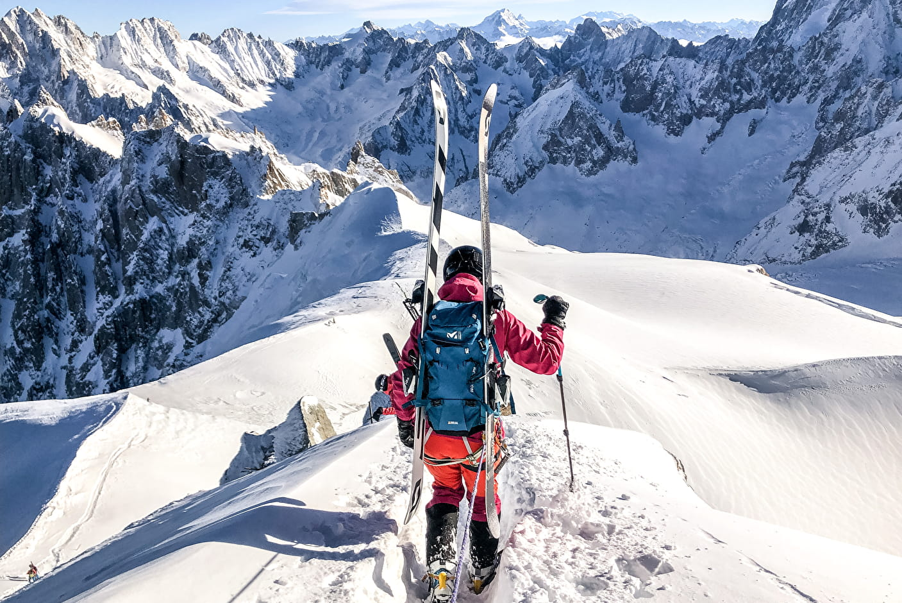

¿Por qué deberías visitar Chamonix?
Chamonix en Verano
Chamonix en invierno

Algunas ideas de lo que puede hacer...
- Pasear por sus emblemáticas calles
- Subir el teleférico de Aiguille du Midi
- Hacer senderismo o escalada
- Visitar el glaciar de Argentière
- Montarse en el tranvía de Mont Blanc
- ESQUAR!
- Conquistar la cima del Mont Blanc
El hotel Heliopic es una opción inmejorable para aquellos que buscan la combinación
perfecta entre aventura, relajación y lujo en los Alpes franceses.
¡Haga su reserva ahora y prepárase para vivir una experiencia única en Chamonix!